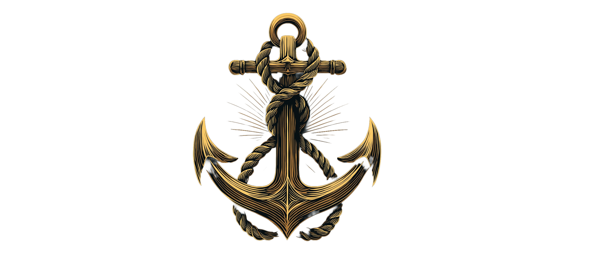

Lord Jim — A Rock Opera
The project, the vision, and the man behind it

Joseph Conrad's Lord Jim is one of the great novels of the English language — a shattering exploration of honor, guilt, and the impossibility of escaping who you are. It has never been adapted for the musical stage. Until now.
Lord Jim: A Rock Opera is a fully realized, two-act theatrical work comprising 22 original songs. It follows Jim — a young sailor of unshakeable self-belief — from his catastrophic failure aboard the Patna, through years of exile and shame, to his improbable reinvention as the beloved protector of a remote jungle settlement in Southeast Asia. And then to his inevitable end.
The score draws from the visceral power of progressive rock, the dramatic architecture of the great Broadway musicals, and the raw emotional directness of artists like Bruce Springsteen, Pink Floyd, and The Who. It is built for the grand stage — full orchestra, rock band, large ensemble — but driven by the intimate psychological truth of Conrad's characters.
The musical landscape for this kind of work has never been more receptive. Audiences hungry for literary depth, emotional complexity, and genuine theatrical ambition — the audiences that made Hamilton, Hadestown, and The Lehman Trilogy cultural events — are exactly the audience this opera is written for. Lord Jim offers something rare: a story that is simultaneously epic in scope and devastatingly personal in its emotional truth.
The project is at the stage of script and score development, with complete lyrics, production guides, and full character breakdowns in place. It is seeking creative collaborators, workshop opportunities, and investment partners who share the belief that the greatest stories — and the greatest stages — deserve each other.
I came to Lord Jim the way most people come to Conrad — sideways, reluctantly, and then completely. I picked it up expecting a sea story and found something that felt uncomfortably personal: a man who makes one terrible decision in a moment of panic and then spends his entire life trying to outrun it. Not a villain. Not a coward in any simple sense. Just someone who discovered, at the worst possible moment, that he wasn't quite the person he believed himself to be.
That gap — between who we imagine ourselves to be and who we actually are when tested — struck me as one of the most honest things I'd ever read. And it struck me as a story that could only be told properly through music. Not the polished, declarative music of conventional Broadway — but something rawer. Something with the storm in it.
I've spent years listening to music that tells big stories without flinching: Pink Floyd's The Wall, Springsteen's Nebraska, The Who's Tommy, Rush, Tom Waits. Music that understands that real emotion is rarely tidy. That shame sounds different from guilt. That redemption, if it comes at all, tends to arrive in a form you didn't expect and can't quite celebrate.
Lord Jim the rock opera is my attempt to bring those two worlds together — the literary depth of Conrad and the visceral, immediate power of progressive rock. Twenty-two songs. Two acts. One man's impossible journey from the ship he abandoned to the jungle settlement that made him whole, and finally to the moment where he chooses, at last, not to run.
I believe this story belongs on the great stages. I believe there is an audience — a large, hungry, underserved audience — waiting for musical theater that takes them seriously. And I believe Jim's final walk, head high, unafraid, is one of the most moving things I've ever written.
I hope you feel it too.
Credits
Joe Wilford
Music & Lyrics · Book · ConceptionDedalus
ArtistBased on the novel Lord Jim
by Joseph Conrad · Published 1900© 2026 · All Rights Reserved
For press enquiries, investment discussions, workshop opportunities, or creative collaboration — reach out.
Make Contact →